圖5.1 感測器的角色。 (參考金，2001整理重繪)

第一節 感測器
一、前言
感測器為可將待測量轉換成電氣訊號的機制或元件，而其轉換後的訊號，可根據需求傳送到裝置上進一步處理，具有取代人類五官的功能。如圖5.1所示，感測器在自動化系統中所扮演的角色為將受控設備、控制程序或相關環境現況，傳給控制器中，進行訊息儲存、訊息顯示或作為控制決策、輸出控制訊號的依據。
感測器的種類非常多，可依不同特性加以分類，若依感測器是否能自行產生電
能可分為主動式感測器與被動式感測器。主動式感測器受到待測量影響時，會產生電壓或電流，常見的有量測溫度的熱電偶、量測壓力或力量的壓電元件、太陽能電池。被動式感測器受到待測量影響時，只會改變其電阻、電容等內部特性，常見的有光敏電阻、熱敏電阻等。
感測器的待測量就是物理量或化學量，例如：溫度感測器中溫度即為其待測量，在溫室栽培所使用的感測器中，主要的待測量有：溫度、日射量、濕度、風
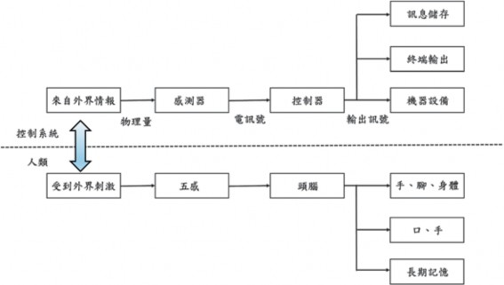
速、雨滴等。
二、感測器規格與特性表示
在選用感測器上，除了針對待測量選擇相對應的感測器外，尚需考慮一些感測器的特性，茲說明如下：
（一） 滿刻度 (full scale, FS)
感測器所能感測或所能顯示的最大區間。
（二） 量測精度
用來表示感測器量測結果的正確性，為準確度和精密性總和，兩者之間關係與
示意如圖5.2所示。
多次量測的算術平均數與真值間的
差值稱為準確度，兩者愈接近則準確度愈高。通常以滿刻度百分比來表示。
多筆資料在其平均值四周分布的廣度
稱為精確性，分布愈廣則精確性愈差。精確性可由另一個角度來理解，即：感測器在相同條件下重複量測相同待測量時，讀值 (readings) 是否相同的能力，但不必考慮量測數據與真值間的差值。由上述可知，準確並不一定精確，精確亦不一定準確，其示意如圖5.3所示。
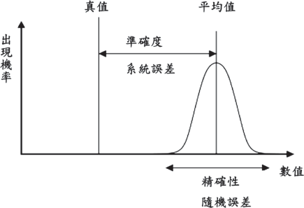
來源可知且可消除的誤差，例如：感測器精度不良所造成的誤差，可藉由
準程度，應是「不準確度」，但通常習慣仍稱之為「準確度」。

高準確、低精確 (b) 低準確、高精確圖5.3 高準確、低精確與低準確、高精確之示意圖。 (參考維基百科整理重繪)
由上述的兩規格參數可知，感測器的規格參數有下列特性：
通常以某個參數的百分比來表示，而不以絕對數值來表示，這樣才能公平地比較不同感測器的優劣。例如：甲溫度感測器準確度為1℃，乙溫度感測器為 0.5℃，使用者可據此判斷乙較為準確嗎？答案為否。因為甲的量測範圍若為 1000℃，乙的量測範圍若為100℃，則甲的準確度為0.1％FS，乙的準確度為 0.5％FS。所以甲較為準確。
許多參數是用正面詞彙來描述該感測器達不到的反面程度。例如：規格中的
「準確度」(accuracy)，意指量測結果不
規格所標示之值，通常為該參數可能出現的最大值。
（三） 誤差 (error)
讀值與真值 (true value) 間之差距。
錯誤 (mistake)
人為或操作所產生的誤差，例如：人眼讀取玻璃溫度計時，觀察者未與刻度面平行，形成誤差，可藉由訓練來克服。
系統誤差 (systematic error)
校正 (calibration) 來消除。
隨機誤差 (random error)
發生原因不明或無法掌握，隨機出現的誤差。須藉由統計 (statistic) 方法來加以分析。
系統誤差與隨機誤差的關係如圖5.2所示。
（四） 範圍 (range)
指輸入信號在某特定區間的上、下限，對感測器而言可分為下列三種定義，其關係如圖5.4所示。
待測量在此範圍內其輸出為線性。亦
稱為滿刻度或額定範圍 (rated range)，如圖 5.4中A～B區。
圖5.4線性範圍上限B至可容忍上限C
的區間，若待測量落在此範圍則輸出值不保證可信賴或仍呈線性，但感測器保證不會損壞。通常以滿刻度百分比來表示，例如：250％FS。
圖5.4可容忍上限C至破壞上限D的區
間，若待測量落在此區間內，感測器可能損壞，超出D值則一定損壞，亦以滿刻度百分比來表示，例如：400％FS。
（五） 展幅 (span)
指待測量在線性範圍內相對應的輸出範圍，也稱為「滿刻度輸出」(full scale output, FSO)，如圖5.4中A～E區間，或指
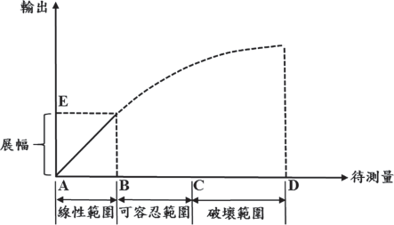
圖5.5 遲滯現象與遲滯量。 (參考楊，2019整理重繪)

感測器可量測上限與下限的差值。例如：感測器標示可從-10℃量測至+40℃時，展幅即為50℃。
（六） 靈敏度 (sensitivity)
其定義為輸出訊號變化與待測量變化的比值。例如： Pt-100 電阻靈敏度為 0.392Ω/℃，代表待測溫度上升1℃，則輸出訊號輸出增加0.392Ω。
（七） 解析度 (resolution)
感測器可顯示的最小刻度，也稱為鑑別度 (discrimination)。
（八） 重複性 (repeatability或 reprodcuibility)
Repeatability
短時間內，在相同條件下，同一待測量重複量測，相鄰二讀值間接近的程度，僅考慮隨機誤差。
Reprodcuibility
以相同方法對相同待測量，在不同條件下，量測所得相鄰二讀值接近程度。例如：在不同實驗室、由不同人操作，或者時間間隔很長，係將隨機誤差及系統誤差皆考慮在內。
與許多規格一樣，以正面詞彙來描述感測器達不到的反面程度，實際上應是指
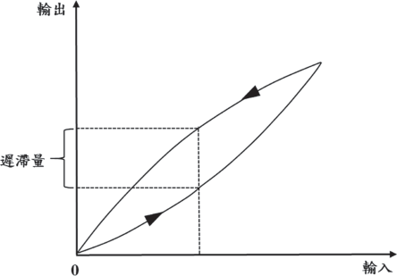
不重複性，以滿刻度輸出百分比表示，例如：0.01％FSO。
（九） 線性度 (linearity)
感測器使用應選擇良好的線性範圍。但並無絕對線性系統，因此線性度是指在線性範圍內輸出的非線性程度，以滿刻度輸出百分比表示，例如：0.34％FSO。
（十） 遲滯性 (hysteresis)
感測器輸入由小到大遞增時輸出變化與由大到小遞減輸出變化不同的現象，如圖5.5所示。而在相同輸入時，兩輸出差異最大值即為該感測器的遲滯量，亦以滿刻度輸出百分比表示，％FSO。
（十一）RSS誤差
在計算感測器本體誤差時，可將重複性、線性度與遲滯性所形成的誤差，以各別平方相加後開根號，求出「和方根值 」 (root-sum-square)。
（十二）反應速率
感測器真實反應待測量變化所需時間，亦稱為感測器的「慣性」，例如：水銀溫度計要數十秒才能反應溫度變化，所以不適合溫度快速變化量測。
除了上述感測器規格外，在設置感測
器前還需考慮輸出訊號種類、電源種類、防護等級、安裝地點等。
三（一、）溫溫室度栽感培測常器用感測器
在溫室中常使的溫度計，依其原理大致可分為熱脹冷縮式玻璃溫度計 (glass thermometer) 與雙金屬溫度計 (bimetal t h e rm o m e t e r) 、電學式屬電阻溫度計 (resistance temperature detector, RTD)、熱敏電阻 (thermistor)、熱電偶 (thermocouple)與熱輻射原理非接觸式紅外線溫度計，茲說明如下：
玻璃溫度計由底部裝附小型球體及刻
有刻度的纖細玻璃管 (毛細管) 構成。球體中充填液體，當溫度上升時，體積膨脹，使液面於玻璃管依溫度改變等比例升降，可由刻度直接讀取溫度值。
玻璃溫度計價格便宜、觀測容易、穩定性佳，但有準確度不佳、溫度讀取易受觀測者目視角度影響，且量測值無法被擷取利用等缺點。但因為其量測方式為液體的熱脹冷縮，不受電子訊號干擾，且不會因使用時間而產生飄移，故可製成量測範圍較窄校正用玻璃溫度計，此型溫度計其玻璃柱長度仍與原來慣用溫度計相同，但因範圍窄，使得每一刻度單位變小，更容

易觀測，量測準確度因而更為提升。
雙金屬由兩片膨脹係數相異金屬板
黏貼而成，當溫度上升時，因膨脹程度不同，使其往膨脹係數小的金屬方向彎曲。為了提高其靈敏度。常將其製成螺旋狀，驅動指針而顯示溫度，或製成溫度控制器，利用雙金屬的彎曲量到達設定值時，開啟或關閉接點，進行控制作業。
金屬長度變長時電阻增加，截面積變
(5.1)
L
R= ρ A
小時電阻增加，假設金屬長度為L公尺，截面積為A平方公尺，則其電阻值R可表示如下：
其中ρ稱為電阻係數 (resistivity)，其單位為Ω•m。金屬的電阻率會因溫度變化而改變，則有以下關係式：
ρ = ρ0 (1+α1T) (5.2)
其中T為溫度、單位℃，ρ0為T=0℃時的電阻係數，α1為電阻係數的溫度係數。由於金屬長度與截面積受溫度變化很小，
(5.3)
L
L
ρ A = ρ 0 A(1+α1T)
將式5.1代入5.3中可得
R=R0 (1+ α T) (5.4)
R0為溫度0℃時的電阻，α為電阻溫度係數、單位為Ω/℃應用量測金屬間電阻值進而求出溫度的感測器稱為測溫電阻體，由於鉑 (白金、Pt) 的熔點高達1,768℃，且具有非常穩定化學特性，而且在0℃時其電阻值為100Ω，故時常做為感溫材料，稱為 Pt-100。在0～200℃間，線性程度非常良好，α=0.392Ω/℃。另外，為避免自體發熱影響量測，需限制通過電流在2mA以內。白金測溫電阻體準確度高，如表5.1所示， A級品在0℃時只容許0.15℃的誤差，600℃時也只有1.35℃的誤差。
熱敏電阻是由半導體製成， 依其電
阻值隨溫度變化的特性大致可分成NTC (negative temperature coefficient)、PTC (positive temperature coefficient) 與CTR (critical temperature resistor) 三種。其中PTC
將式5.2兩邊同時乘上 AL ，可得：
與CTR這二種熱敏電阻，當溫度達某一定值時，電阻值會產生急劇變化，因此常做為溫度開關或窄範圍溫度量測，NTC熱敏
測定溫度 (℃) | 容許誤差 CLASS A CLASS B | |||
℃ | Ω | ℃ | Ω | |
-100 | ±0.35 | ±0.14 | ±0.8 | ±0.32 |
100 | ±0.35 | ±0.13 | ±0.8 | ±0.30 |
表5.1 不同等級白金RTD的容許誤差
-200 | ±0.55 | ±0.24 | ±1.3 | ±0.56 |
0 | ±0.15 | ±0.06 | ±0.3 | ±0.12 |
200 | ±0.55 | ±0.20 | ±1.3 | ±0.48 |
400 | ±0.95 | ±0.33 | ±2.3 | ±0.79 |
600 | ±1.35 | ±0.43 | ±3.3 | ±1.06 |
700 | ±3.8 | ±1.17 | ||
850 | ±4.6 | ±1.34 |
300 | ±0.75 | ±0.27 | ±1.8 | ±0.64 |
500 | ±1.15 | ±0.38 | ±2.8 | ±0.93 |
650 | ±1.45 | ±0.46 | ±3.6 | ±1.13 |
800 | ±4.3 | ±1.28 |
電阻其特性為溫度上升時，電阻非線性地變小，電阻變化量為RTD的10～20倍，故靈敏度較高，對小溫度變化更為敏感。
熱電偶是將兩種金屬導線末端接合所
符號 | 正 極 材 料 負 極 | 量測範圍 (℃) | 最高溫度 (℃) | 靈敏度 (μV/℃) | |
E | 鉻鎳 | 康銅 | -200～800 | 1000 | 68 |
T | 銅 | 康銅 | -200～350 | 600 | 43 |
表5.2 常用熱電偶的特性規格
構成。對應於接合處的溫度，兩條金屬間產生溫差電動勢，稱為席貝克效應，使用高感度電壓計量測電壓值，即可計算求得溫度。熱電偶價格便宜，操作容易，對量測點 (葉、莖、果實等) 使用膠帶黏貼即
J | 鐵 | 康銅 | -200～750 | 1000 | 52 |
K | 鉻鎳 | 鋁鎳 | -200～1200 | 1260 | 41 |
R | 87％鉑+13％銠 | 鉑 | 0～1400 | 1700 | 6 |
S | 90％鉑+10％銠 | 鉑 | 0～1450 | 1700 | 6 |

可。必要作多點量測時，接續於可切換頻道的紀錄器，使用一台資料記錄器可連續量測多點溫度。常用熱電偶的型號、使用材料與量測溫度範圍如表5.2所示。
只要物體溫度不為絕對零度，就會向
周遭釋放出能量，利用感測元件接收某物體放射在近紅外線範圍內發射能量，再換算成溫度值，可在不接觸物體的情況下，進行溫度量測，因不接觸物體，故不影響待測物溫度與生理作用，適用於植物本體溫度的量測。由於每個物體放射率不同，因此在量測前，必須預先設定待測物件的表面輻射放射率。
（二） 濕度感測器
溫室內常用來量測濕度感測器有乾濕球式濕度感測器 (psychrometer)、電容式濕度感測器 (capacitive humidity sensor) 與電阻式濕度感測器 (resistive humidity sensor)。乾濕球式濕度計是主要量測出乾球溫度與濕球溫度後，再利用第四章第一節所介紹的相對濕度公式，計算而得。電容式濕度計應用濕度會改變兩吸濕材料電極間的靜電容量設計而成，電容式濕度計有寬廣量測範圍 (10～95％) 與線性，但在高濕環境下容易結露而造成短路與損壞。電阻式濕度感測器，主要是利用陶瓷或高分子材料作為
感濕原件，當元件吸收空氣中水分時，可量測到電阻改變進而換算出相對濕度值，其量測範圍為15～90％。無論是電容式或電阻式濕度感測器準確度約為±2～3％。
（三） 光感測器
農業與溫室栽培中常使用日射計 (radiation meter)、光合成有效輻射計 (PAR meter) 與照度計 (visible light meter) 進行光量測，大部分光感測計都是由矽為基材的光電二極體製成，準確度約落在±5～
±8％之間。只有擔任校正的日射計是使用多條熱電偶線合成熱電堆 (thermopiles) 製成，準確度約落在±2～±5％。
熱電堆式日射計量測波長範圍為300～ 3,000nm，包括紫外線、可見光、紅外線及熱輻射等。將其設置於溫室外可量測溫室所接收的所有能量。熱電堆式日射計構造
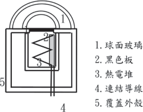
圖5.6 熱電堆式日射計構造示意圖。 (參考Kamp
et al., 1996整理重繪)
如圖5.6所示，內部黑色受熱板，接受來自太陽日射，吸收全部的輻射能量。日射增加時，黑色板變熱，再將熱量輻射至內部熱電堆。熱電堆溫度隨輻射量依固定比例變化。當熱電堆溫度愈高，連接導線形成的熱電動勢也愈高。量測電壓值大小，即可換算為日射量。
光電二極體製成的光感測器構造如圖 5.7所示。當沒有光照時，光電二極體會產生小於0.1微安培的電流，稱為暗電流 (dark current)。當有光照時，帶有充足能量的光子撞擊到二極體上，它將激發一個電子，因而產生自由電子與帶正電的電洞，此機制被稱作是內光電效應。若此效應發生在空乏區，則該區域內電場屏障將被消除，使得電洞向陽極運動，電子則向陰極運動，形成光電流。實際量測到的電流是暗
電流和光電流總和，因此暗電流必須被最小化來提高對光的靈敏度。當撞擊到光電二極體的光子愈多，產生電流愈大，藉由量測電流大小而換算光子數量。光電二極體上方裝置有濾波板，可依不同需求設計而形成PAR計或照度計，例如：PAR計的濾波板僅能透過光合成有效放射等特定波長，而照度計的濾波板則透過相同於人類眼睛感度的500～600nm黃／綠波長。
（四） 風速計 (anemometer)
在溫室栽培中常使用的風速感測器依其構造可分為熱線式風速計、風杯式風速計與扇葉式風速計。熱線式風速計在設計上由兩支溫度計構成，一支溫度計隱藏在風速計內部，另一支溫度計以細金屬形式暴露在空氣中。施予一定電壓，金屬線會
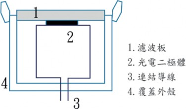
圖5.7 光電二極體製成的光感測器構造示意。 (參考Kamp et al., 1996整理重繪)

產生熱量，風會將熱量帶走。因此風速愈大，外部金屬線溫度就愈低。藉由量測兩支溫度計的差異値可推算風速值。熱線式風速計準確度高，約在±0.1m/sec，且可量測0.3m/sec 以下的低風速，因此售價也相對昂貴，而且其構造精巧、易損傷，在使用時必須要避免撞擊。
風杯式與扇葉式風速計，皆是藉由感測轉速值來做為風速大小的換算，傳統上是利用發電機原理，轉速愈快產生愈高的電壓，近來改以光編碼器來量測轉速，因為不必驅動發電機構，故磨擦力較小，量測性能更佳，準確度可維持±0.1m/sec，但因為磨擦阻力影響，並不適用0.3m/sec以下低風速量測。
風杯式風速計常使用於小型氣象站，扇葉式風速計則常使用於手提式裝置，風杯式風速計若設置於屋頂附近容易形成亂流，影響風速量測。量測位置應置於溫室附近上方5～10m處，以避免亂流影響。另
外風速計也須定期校正及潤滑保養。
（五） 雨滴感知器 (rain indicator)
傳統雨滴感知器主要構造為表面上黏貼兩個金屬片，當下雨時，兩金屬片因雨水導通而產生電流，信號傳送至控制器。設置時通常會傾斜角度，使雨滴容易滑落。當降雨停止時，利用加熱裝置乾燥表面。雨滴感知器表面污濁時，兩金屬片將經常處於導通狀態，控制器將認知持續處於降雨的情況。因此，表面須時常用水加以清潔處理。
光學式雨滴感知器內建一個發光二極體，可發散出一束錐形光線並穿過上方接收玻璃，當接收玻璃處於乾燥狀態時，幾乎所有光都會反射到光電二極體上；當下雨時，接收玻璃上會有水滴，一部分光線就產生折射，使得光電二極體接收到光總量發生變化，藉以判斷現在是否下雨。

第二節 控制工程
（一） 控制迴路
一、基礎控制技術簡介
(control loop)
利用控制器控制相對應設備，使溫室內環境因子達到目標的過程稱為控制程序 (process)，圖5.8為控制迴路構成元件示意圖，由圖中可知，控制迴路主要由感測器、控制器、環控設備與控制程序所組成。
現以天窗啟閉促進自然通風控制室內溫度為例：於控制器 (controller) 中輸入溫度設定值 (set value)，當溫室內溫度量測值 (measure value) 高於設定值時，即開啟天
窗。控制迴路由下列四項單元構成：控制迴路單元 例子

─ 控 制 程 序 溫 度
─ 感 測 器 溫 度 感 測 器
─ 控 制 器 微 電 腦 控 制 板
─ 環 控 設 備 天 窗
控制器控制「溫度」程序如下：微電腦控制板已輸入所要控制的溫度，作為設定值 (SV)。微控板每分鐘從溫度感測器接收溫度量測值 (MV) 並與SV比較，若二者之間有差異時，將調整天窗 (環控設備) 開
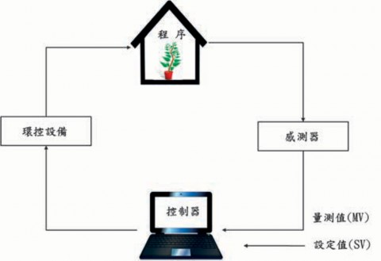
圖5.8 控制迴路。 (參考Kamp et al., 1996整理重繪)
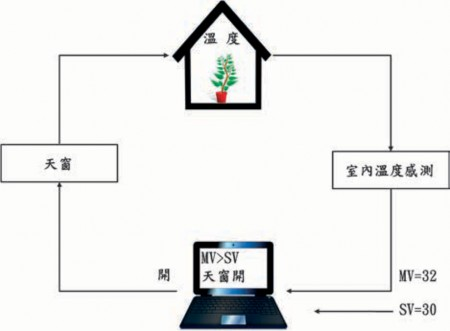
圖5.9 一次控制迴路 (primary control loop) 之例。 (參考Kamp et al., 1996整理重繪)
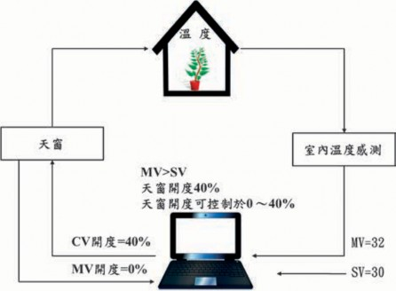
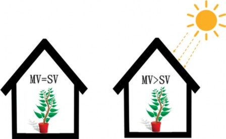
圖5.11 日射作為溫度控制程序外部干擾示意圖。 (參考Kamp et al., 1996整理重繪)
度，期望能修正溫度到設定值。
圖5.9為當SV=30℃、MV=32℃的情況，為了讓MV降溫到30℃須開啟天窗進行自然通風，此為利用天窗啟閉控制「溫度」程序的一次控制迴路。
為使室內氣溫的MV及SV盡量一致，控制器依據周圍氣候狀況計算天窗所需開度 (CV開度) 後，可使用二次控制迴路將天窗開度調整至計算值。參考圖5.10，若控制器計算天窗須開啟40％，則控制器需先量測目前天窗開度 (＝MV開度)，若「CV開度」值大於「MV開度」值時，控制器再控制天窗開啟至CV開度。
（二） 干擾 (disturbance)
「溫度」控制程序時時刻刻受到外部環境影響，影響控制程序的因子稱為干擾。圖5.11為日射作為溫度控制程序外部干擾的示意圖，當干擾發生時，會使得MV及SV之間產生差異，為消除此差異必須隨時進行調整。控制器為消除或減少干擾影響，有閉迴路控制與開迴路控制兩種方式可供應用。
（三） 閉迴路控制
閉迴路控制中，控制器對外界干擾為間接反應如圖5.12所示。當外界干擾致使控制對象產生改變時，控制器必先感知SV與MV間的差異後，控制器才開始發出控
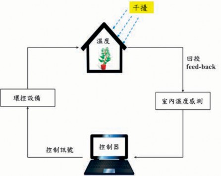
圖5.12 對外界干擾採取間接反應：閉迴路控制。 (參考Kamp et al., 1996整理重繪)
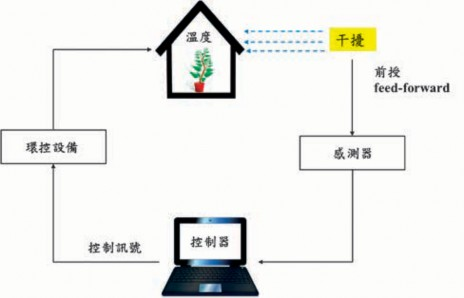
制訊號，調整環控設備作動情況，調整完成後，接收感測器信號，得知程序改變的效果。並以間隔一段時間，量測溫室內狀態，確認控制動作效果。此種控制方法稱為「回授控制」 (feed-back)。
（四） 開迴路控制
開迴路控制中，控制器直接對干擾偵測並依偵測結果，控制相對應環控設備如圖5.13所示。風速急劇變大時，風速與室內溫度之間存在固有關係，控制器感測到風速改變的信號後，立即關閉天窗。
開迴路控制的設定主要依據下列兩個因子：目前量測值與使用者經驗。
依據目前量測值 (溫室外量測值) 的開迴路控制必需符合下列兩種情況：
干擾與控制程序間具有其必然性關係例如：風速增加1m/s時，則室內氣溫將下降；室外氣溫降低1℃，則室內氣溫將下降。
環控設備之作動與控制程序間具有其
必然性關係
例如：熱水管溫度升高1℃，則室內氣溫將上升；天窗開度增加10％，則室內氣溫將下降。
運用上述必然性，當量測到外氣溫下降時，控制器立即計算出溫室內氣溫 (控
制程序) 下降程度。並依據計算結果，決策防止溫室內氣溫降低環控設備的作動方法。因此，開迴路控制係對「干擾與控制程序」及「環控設備與控制程序」間所具有必然性關係加以運用，依據控制器運算，預測SV與MV間即將產生的差值，於事先控制設備之動作，可避免或降低SV與MV間的差異，亦稱為前授控制 (feed- forward)。
依據使用者經驗的開迴路控制，是根基於經驗累積而形成的基本設定，例如：在風扇水牆系統中，水牆供水關閉後，風扇必須多運轉幾分鐘後才停止，以避免水牆過於潮濕而造成使用期限降低，這就是藉由經驗累積而形成的開迴路控制。溫室內空氣循環狀態為作物生長要因之一，然而控制器無法量測，但可藉由設定天窗最小開度、最低熱水管溫度、定時啟動內循環風扇等各種不同方式，達到增加空氣循環之目的。這些對空氣循環具有效應的種種方法，乃依據過去經驗累積，或對短期天氣預報等資料的判斷。例如：當天氣預報：多雲、外氣溫高、幾乎無日射。此干擾條件，對溫室內空氣流動為負面效應。栽培者預測空氣循環將不充分，在事前調整最低熱水管熱水溫度或調整內循環風扇運作時間與間距。
開迴路控制主要依據干擾、控制程序、環控設備間的關係執行，若關係判斷錯誤時，溫室內環境控制將產生相逆的效應，此為開迴路控制的缺點。例如，栽培者依據天氣轉冷的預報，調整熱水管最低溫度，然而天氣變化為良好氣候，此情況即無必要設定最低熱水管溫度，但最低熱水管溫度卻已維持該設定，造成相逆的結果。
（五） 開迴路控制與閉迴路控制並行
一般而言，「閉迴路控制」，因應控制程序 (溫室內環境) 變化結果執行控制；例如：溫室內氣溫太高時，開啟風扇水牆
系統降溫、CO2濃度降低時，啟動CO2施用裝置。「開迴路控制」於產生狀況變化結果之前執行控制；例如：對應於風速改變天窗開度、對應光強度啟閉遮光網。而在控制中常使用定時執行調節動作也屬於開迴路控制；例如：日出1小時後，開啟保溫簾幕、作為預備加溫，14:00開始提高熱水管溫度。
但在實際控制應用時， 通常不是單一開迴路或閉迴路控制的問題，很多情況為兩者並行。例如：如圖5.14所示之通風控制，當日射增加，量測溫度高於設定溫度時 (MV＞SV)，控制器開啟天窗。此
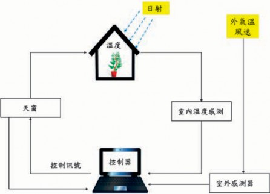
動作為閉迴路控制，必須SV與MV間先有差異，差異產生後再執行閉迴路控制。其後，若風速或外氣溫有變化，於室溫改變前調整天窗開度，此動作則為開迴路控制。
二、環控設備的分類
溫室內環境與設定環境產生偏離時，控制器可操作環控設備，使環境達到設定值。從控制技術的觀點，不同設備其控制原理有差異。熱風加溫機以切換開關之 ON/OFF運轉：溫度過低時ON；溫度過高時OFF。熱水管加溫利用混合閥控制熱水量逐漸調整熱水管溫度，對應於室溫與設定值間之溫度差，提高或降低熱水管溫度。此兩種加溫設備，控制程式各有不同。熱水管加溫由控制器計算出室內溫度維持於設定溫度所必要熱水管溫度。熱風加溫機則僅由控制器控制ON和OFF狀態。
依控制方式可將各種環控設備區分如下：
★ON/OFF控制
─熱風加溫機
─燃燒器 (高／低／停止)
─噴霧 (壓力固定)
─遮光網
─CO2施用
─補光
─水牆＋風扇循環扇
★運轉程度可變控制
─換氣窗
─捲揚式天窗
─燃燒器 (可變式)
─熱水管加溫
─噴霧 (壓力可變)
─水牆＋變頻風扇
─CO2施用 (運用電子式流量控制閥)
─光強度可調的補光
三、ON/OFF控制
大部分環控設備都僅有開關切換ON或 OFF，少有中間切換位置。如熱風暖房機的入／切；CO2施用的供給／停止；遮光網的開／閉。ON/OFF控制環控設備的缺點為當環境條件於設定值附近時，會產生頻繁ON/OFF現象，設備容易損壞。例如：補光作業，每一次點燈都會縮短燈泡壽命。此外頻繁地切換有時亦會對溫室內環境造成不良影響，例如：熱風加溫機或鍋爐，開啟開關時的不完全燃燒會產生有害污染物質。為避免開關頻繁ON/OFF切換，可以下列三種方法加以避免：
（一） 時間延遲 (time delay)
機器切換至ON開始運轉後，必須操作經過數分鐘後才能再切換為OFF。

例1：
以ON和OFF狀態皆有時間延遲3分鐘的熱風加溫機控制室內溫度為例，加溫機啟動的設定溫度為20℃，電腦量測到溫度為19.8℃時，熱風加溫機切換為ON，雖然在1分鐘內熱風加溫機將溫室內溫度提高至 20℃，因設定3分鐘的時間延遲，故熱風加溫機一定會停留在ON的狀態至少3分鐘，
時刻 (分)
1
2
3
4
5
6
7
8
9
10 11
表5.3 光強度量測值與控制訊號一覽表
於時間延遲時段後，若溫度量測值在20℃以上，再切換為OFF。熱風加溫機停止後， 3分鐘的時間延遲內同樣維持OFF狀態。

例2：
遮光網的控制中，設定光強度400W/ m 2 作為遮光網閉合條件。在日射量變化大的天候，短時間內量測到光強度高低變
延遲3分鐘的控制訊號 開
開
開
閉
閉
閉
閉
閉
閉
閉
閉
光強度 量測值 (W/m2)
300 440 380 450 350 320 460 530 600 420 390
依據量測 值的控制訊號 | 開 | 閉 | 開 | 閉 | 開 | 開 | 閉 | 閉 | 閉 | 閉 | 開 |


例3：
動、依據量測值的控制訊號、延遲3分鐘的控制訊號如表5.3所示。圖5.15為光強度量測值隨時間變化與延遲3分鐘的控制訊號隨時間變化，以400W/m2繪製水平虛線，可發現與光強度變動曲線有六個交點，代表啟閉六次，而延遲3分鐘的控制訊號在圖中僅有在第4分鐘時產生一次狀態變化，代表啟閉一次。因此，利用時間延遲，可有效降低遮光網頻繁啟閉現象。
為了讓學生可用低成本設備，瞭解時間延遲的設計，利用arduino uno板搭配光
敏電阻與LED，設計一個小型補光實驗裝置，其接線如圖5.16所示，為了更簡化學習，利用ArduBlock積木式編程，其程式如圖5.17所示，測試結果：當光線被遮擋，光敏電阻量測值低於300，LED亮且持續至少3秒，3秒內光敏電阻測量值高於300，並不改變LED作動狀態；3秒後光敏電阻測量值大於300，LED暗且持續至少3秒，3秒內光敏電阻測量值低於300，並不改變LED作動狀態。亦即，無論光敏電阻量測值如何快速地變化，LED作動狀態一定會至少維持所設定的延遲時間。
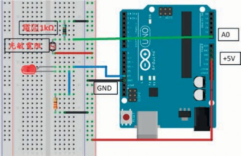
圖5.16 實體接線圖
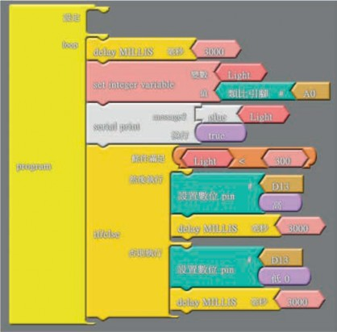
圖5.17 程式編程圖
（二） 不感帶 (dead zone)
參考圖5.18，輸入設定值 (SV) 及不感帶範圍，當量測值低於「設定值－0.5×不感帶」時設備啟動，量測值高於「設定值

例1：
＋0.5×不感帶」時設備停止。
蝴蝶蘭催花作業， 需將畫溫維持在 20～25℃，冬季時可用熱風機進行加溫作業，參考圖5.19設定值為23℃，不感帶為 2℃。此情況，當溫度低於22℃時熱風機作
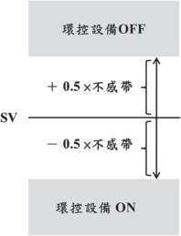
圖5.18 不感帶與設定值。 (參考Kamp et al., 1996
整理重繪)
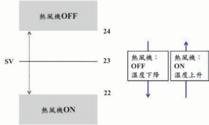
圖5.19 熱風機暖房的不感帶示意。 (參考Kamp et al., 1996整理重繪)
例3：
動，高於24℃後停止。設定不感帶後，溫
例2：
度再次降到22℃之前熱機不動作，形成時間延遲，有效防止頻繁地ON/OFF切換。
室外光強度低時須進行補光。補光設備設定於光強度40W/m2以下時啟動。當光強度於40W/m2附近變動時，設備ON/OFF頻繁切換，為防止此現象，額外的設定：
ON：低於40W/m2 OFF：高於55W/m2
運用不感帶控制的補光系統，接線方式如圖5.16所示，程式編程如圖5.20所示。每3秒將光敏電阻量測值輸入於系統，當光敏電阻量測值小於250時，LED亮，當光敏電阻量測值大於300時，LED暗 。
為防止頻繁地ON/OFF切換，以不感帶應用於設備控制，會形成偏差 (differential)。若設定值為23℃，不感帶為2℃。熱風加溫機於22℃時作動，24℃時停止，設備作動與停止間存在2℃的操作偏差 (switching differential)；但實際室內氣溫變化可能達到2℃以上，此變動幅度稱為程序偏差 (process differential)。於一時段內，量測溫度在24℃及22℃附近如波浪般變化。氣溫量測最高值高於24℃，最低值低於22℃，如圖5.21所示。

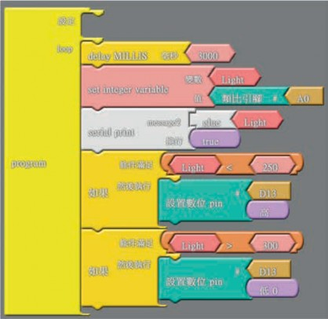
圖5.20 程式編程圖
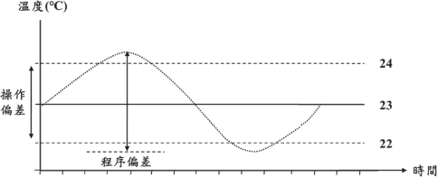
圖5.21 操作偏差與程序偏差。 (參考Kamp et al., 1996整理重繪)
（三） 量測平均值法 (average measurements)
光、風速、風向量測值可能急劇地改
變，直接使用這些量測值執行控制，將造成不穩定的控制狀態。一般環境控制時，每分鐘量測一次溫室外環境，計算出量測5～15次的平均值來做為控制之用。例如：設定光強度高於400W/m2時，遮光網閉合，某日光強度量測值、平均值 (控制器計算5分鐘的平均值，於下1分鐘，刪除5分
時刻 (分)
1
2
3
4
5
6
7
8
9
10 11
光強度量測值 (W/m2)
光強度平均值
300
440 380 450 350 320 460 530 600 420 390
60
148
224
314
384
388
392
422
452
466
480
閉
閉
閉
閉
開
開
開
開
開
開
開
依據平均值的控制訊號
開
閉
閉
閉
閉
開
開
閉
開
閉
開
依據量測值的控制訊號
表5.4 光強度量測值與量測平均值法控制訊號一覽表
鐘前之值，加入最新量測值) 與控制訊號的運算結果如表5.4所示，將光強度量測值與光強度平均值隨時間的變化繪製如圖5.22所示，於圖中以400W/m2繪製一條水平虛線，光強度量測值與虛線有六個交點，代表10分鐘內遮光網作動六次。五次量測平均值，於10分鐘內可得到較平滑變化，光強度平均值與虛線只有一個交點，代表10分鐘內遮光網僅作動一次，因此，利用量測平均值法，亦可改善遮光網頻繁啟閉現象。
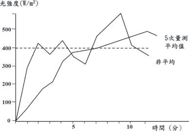
圖5.22 量測平均值法示意圖。 (參考Kamp et al., 1996整理重繪)
圖5.23 捲揚式天窗

三、運轉程度可變控制
環控設備中，除了運用簡單的ON/ OFF控制外，有些設備可依需求開啟不同程度的操作量，例如：在自然通風控制中，可調整捲揚式天窗開度；變頻風扇可調整風扇出口風量；調光系統可調整人工光源強度等，在自動控制中常用來調整設備運轉程度的方式有：（一）比例控制，
（二）比例積分控制，（三）比例微分控制，（四）比例積分微分控制，茲以捲揚式天窗啟閉來加以說明，其構造如圖5.23所示。捲揚式天窗開度的控制，可先計算電動捲揚器將天窗完全開啟所需時間，藉由控制電動捲揚器的正、反轉運行時間來控制開度。
（一） 比例控制 (proportional control)
經由控制器可任意調整捲揚式天窗開
度於0～100％，在控制器設定捲揚式天窗的開啟溫度，即換氣設定溫度。量測室內溫度，由量測值高出設定值的差值，按其比例開啟捲揚式天窗。故計算捲揚式天窗開度前，必須要設定比例帶，以捲揚式天窗開度為100％量測溫度與設定值間的差值作為比例帶。由比例帶計算室內溫度每高出設定溫度1℃，捲揚式天窗開度增加比例。例如：換氣溫度設定為20 ℃。比例
帶設定為5℃，室溫高於設定溫度5℃以上時，捲揚式天窗開度100％。當室溫比設定溫度高出1℃時，捲揚式天窗開度為20％。室內氣溫為23℃時，捲揚式天窗開度可由
下式計算：
(( 室內氣溫－換氣設定溫度)/ 比例帶)×100％＝捲揚式天窗開度
((23－20)/5)×100％＝60％
若更改比例帶為10 ℃，其他數值不變，則捲揚式天窗開度改變為：
((23－20)/10)×100％＝30％
若更改比例帶為15 ℃，其他數值不變，則捲揚式天窗開度改變為：
((23－20)/15)×100％＝20％
由上述計算可知， 捲揚式天窗開度調整幅度，能以比例帶大小加以調整。比例帶較大時，捲揚式天窗開度調整幅度較小。比例帶較小時，捲揚式天窗開度調整幅度變大，溫度稍微變化，捲揚式天窗立即有敏銳反應。
換氣的目的，在於移除多餘的熱與水分。熱及水蒸氣移除速度，受溫室外氣溫
及風速影響。當外氣溫低、風速大時移除速度快，外氣溫高、氣候平穩時移除速度較慢。為能平穩地控制通風動作，必須以適確速度去除多餘熱或水蒸氣。因此比例帶必須依據外界環境狀態而改變設定。
比例帶設定適確， 多餘熱可以適當
速度移除，能得到平順、安定的控制如圖
5.24所示。
比例帶過小，室內溫度稍高於設定溫度，捲揚式天窗即大幅度地開啟，熱的移除突然變大，溫度急速下降。使得捲揚式天窗關閉，氣溫上升，捲揚式天窗再度開啟，捲揚式天窗連續的反覆啟閉，形成控制不穩定狀態如圖5.25所示。
若比例帶過大，無法以充分速度移除多餘熱，氣溫上升形成持續高於設定溫度的情況。產生較大的穩態偏差 (static
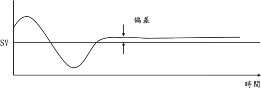
圖5.24 適當的比例帶設定。 (參考吳，1991與Kamp et al., 1996整理重繪)

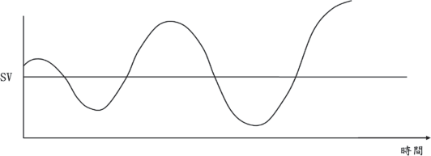
圖5.25 過小比例帶形成不穩定的控制。 (參考吳，1991與Kamp et al., 1996整理重繪)
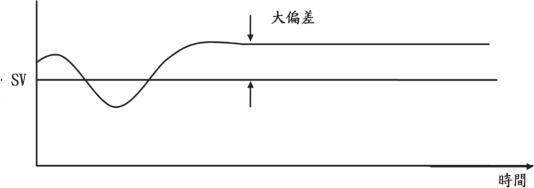
圖5.26 過大比例帶形成大的偏差。 (參考吳，1991與kamp，1996整理重繪)
deviation) 如圖5.26所示。
（二） 比例─積分控制 (proportional- integral control)
使用比例帶控制通風時，決定環境
量測值，便可決定其對應的捲揚式天窗開度。捲揚式天窗開度，因比例帶、風速及外氣溫而決定。但是已決定特定比例的捲
揚式天窗開度後，設定溫度與室溫也有產生差異的情況，此時可利用比例積分控制來加以調整。
控制器如前述方法開啟捲揚式天窗，每分鐘檢查目前開度是否有達成設定溫度目標。於比例積分控制中，當控制器檢查到在現行開度下，室內氣溫產生偏差時，逐漸地改變開度。例如：在比例帶為5℃的
時間 | 換氣設定溫度 | 室內氣溫 | 捲揚式天窗開度 |
14:01 | 22℃ | 23℃ | 20％ |
表5.5 比例控制下、室內氣溫與與捲揚式天窗開度
14:00 | 22℃ | 23℃ | 20％ |
14:02 | 22℃ | 23℃ | 20％ |
14:03 | 22℃ | 22℃ | 20％ |
情況下，時間在14:00後每1分鐘室內氣溫與捲揚式天窗開度如表5.5所示。在14:00時，由風速及外氣溫判斷捲揚式天窗開啟 20％。捲揚式天窗開啟後，氣溫雖下降為
23℃，但持續比設定溫度高出1℃。捲揚式天窗固定於一比例，設定值與室內氣溫間形成1℃的偏差。此偏差可利用積分控制 (integral control) 逐漸地減小。
積分動作以下列方式操作：室內氣溫產生偏差時，每分鐘將捲揚式天窗開度以數％改變。例如：積分動作設為4％，表示對於1℃的偏差，捲揚式天窗開度每分鐘變更4％之意。以時間＝13:00、通風設定溫度＝22℃、比例帶＝5℃、室內氣溫＝ 23℃，因室溫高於設定溫度1℃開啟捲揚式天窗，開度為20％。1分鐘後室溫仍維持 1℃，室溫與設定值有正差值殘留。捲揚式天窗開度增加4％更改為24％。增加捲揚式天窗開度應該能使室內氣溫下降，但於13:02時氣溫仍為23℃，與設定值有1℃差值，捲揚式天窗開度再增加4％更改為 28％。反覆此過程，直到量測值與設定值
間無差值為止。此為比例積分控制的動作特性。
比例控制中，量測值與設定值之間必須有差值存在，對應其差值捲揚式天窗開度固定於一特定比例。但比例積分控制捲揚式天窗開度不固定於一特定比例，捲揚式天窗逐漸地繼續動作直到達到設定溫度。
比例積分控制的特徵因溫室外條件變化，比例帶有過大的情況產生。比例帶過大則捲揚式天窗開啟較慢，移除熱量變少。結果生成偏差，若設定適當的積分動作，可逐漸消除此偏差，如圖5.27所示。
積分動作過小時，偏差無法消除。但干擾發生時，因動作變更幅度較小，對溫室內環境影響較小，故形成圖5.26所示的大偏差，此情況類似比例帶設定過大的情況。積分動作過大則控制較不穩定。控制
器判斷偏差產生後，以大幅度修正，導致氣溫急劇改變如圖5.25所示。情況類似比例帶設定過小的情況，其控制結果比ON/ OFF控制更差。

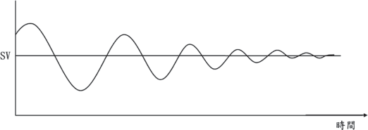
圖5.27 適當積分動作值使偏差消除。 (參考吳，1991與kamp et al., 1996整理重繪)
（三） 比例─微分控制
比例、微分控制動作中，比例控制提供控制器的輸出訊號與誤差信號成正比，微分控制提供額外輸出訊號與誤差訊號變化率成正比，用以預測誤差訊號的未來值，並據以改變控制器輸出。茲舉例說明如下：控制器如前述方法開啟捲揚式天窗，每分鐘檢查目前開度是否有達成設定溫度目標。於比例微分控制中，當控制器檢查到誤差變化率不為0時，逐漸地改變開度。在比例帶為5℃的情況下，時間在 14:00後每1分鐘室內氣溫與捲揚式天窗開
時間 | 換氣設定溫度 | 室內氣溫 | 誤差 | 誤差變化率 | 捲揚式天窗開度 |
14:01 | 22℃ | 23.5℃ | 1.5℃ | +0.5℃/min | 30％+5％ |
表5.6 比例─微分控制捲揚式天窗開度計算一覽表
度如表5.6所示。
在14:00時，由風速及外氣溫判斷捲揚式天窗開啟20％。捲揚式天窗開啟後，氣溫雖下降為23℃，但溫度持續升高。在 14:01時，室內氣溫升至23.5℃，捲揚式天窗依比例控制調整開度於30％，因誤差變化率為+0.5℃/min，假設微分動作設為誤差變化率增減0.1℃/min 時，捲揚式天窗開度增減1％，因此在13:01時，捲揚式天窗開度變為35％。在14:02時，室內氣溫升至 24℃，捲揚式天窗開度依比例控制調整開度至40％，此時誤差變化率+0.5℃/min，
14:00 | 22℃ | 23℃ | 1℃ | 0 | 20％ |
14:02 | 22℃ | 24℃ | 2℃ | +0.5℃/min | 40％+5％ |
14:03 | 22℃ | 23℃ | 1℃ | -1℃/min | 20％-10％ |
因微分動作需額外再多開啟5％，此時捲揚式天窗開度變為40％。藉由誤差的變化量，使捲揚式天窗開度提前加以變化，具有快速反應的特性，但有時會造成操作量過大，例如：在14:03時，室內氣溫降為 23℃，此時依比例控制換算開度為20％，但是因為誤差變化量為-1℃/min，故實際開度變為10％，非常有可能造成下個階段溫度急劇上升，因此若是以降溫為需求，即可在程式書寫中，設定變化率為負值時，不減少開度。
在微分控制中，其增減幅度主要是根據於誤差的變化率，當誤差皆維持固定的穩態誤差時，微分動作不作用，即其輸出值為0，故微分控制不能獨使用，必須與比例控制連用，或是與比例積分控制連用，形成PID控制。
（四） 比例─積分─微分控制 (PID control)
結合比例控制、積分控制與微分控制的特性，能消除比例控制的穩態誤差，
並且壓制控制程序振盪現象。此種控制器適合任何程序的變化，其特性為響應快、穩定性佳，且無穩態誤差。茲舉例說明如下：控制器如前述方法開啟捲揚式天窗，每分鐘檢查目前開度是否有達成設定溫度目標。於比例─積分─微分控制中，當控制器檢查到誤差變化率不為0時，逐漸地改變開度，假設微分動作設為誤差變化率增減0.1℃/min時，捲揚式天窗開度增減1％。積分動作為當室內氣溫產生偏差時，每分鐘將捲揚式天窗開度以4％改變。
在比例帶為5 ℃的情況下，時間在 14:00後每1分鐘室內氣溫與捲揚式天窗開度如表5.7所示。
（五） 結論
利用PID進行控制看似容易，但卻有一個極大的缺點，就是控制參數 (比例帶、積分動作改變比率、微分動作改變比率) 需人工設定，不適當的設定值反而造成過大的穩態誤差或是誤差擴大、系統發散的結果。
時間 | 換氣設定溫度 | 室內氣溫 | 誤差 | 誤差變化率 | 捲揚式天窗開度 |
14:01 | 22℃ | 23.5℃ | 1.5℃ | +0.5℃/min | 30％+5％+8％ |
表5.7 比例─積分─微分控制捲揚式天窗開度計算一覽表
14:00 | 22℃ | 23℃ | 1℃ | 0 | 20％+4％ |
14:02 | 22℃ | 24℃ | 2℃ | +0.5℃/min | 40％+5％+12％ |
14:03 | 22℃ | 23℃ | 1℃ | -1℃/min | 20％-10％+16％ |


第三節 控制實例
溫室所使用的控制系統，依功能需求可分為設備層次 (equipment level)、功能層次 (function level) 與系統層次 (system level)。設備層次主要是對各個設備的直接控制，例如：啟動風扇的馬達、啟動水牆的抽水泵等控制。功能層次則允許針對某一項目標，控制所有的相關設備，例如：將溫室控制在某一設定範圍內，可能會需要在不同階段控制通風、冷卻與加溫等設備。系統層次主要是將各功能層次所作動的設備加以整合，尤其是不同功能層次的設備對其他功能可能會產生重疊與互斥，例如：要控制日照量在某個範圍，因此將遮光網閉合，同時也造成室內溫度降低，在系統層次中，必須藉由監控環境因子，並撰寫相對應的控制邏輯或優先權設定，才能達成整合目的。茲介紹幾個國內常用溫室環控系統的控制邏輯與控制策略。
一、蝴蝶蘭溫室溫度控制
環境控制系統主要的關鍵問題在於如何依內部溫度與相對濕度相互作用進行環控作業，歸納蝴蝶蘭溫室內溫、濕度與光量專用控制軟體邏輯系統，溫度控制主要是藉由設定三個不同的參考溫度 (T1、
T2、T3且T1>T2>T3)，作動不同設備進而形成三階段控制，分別為：（一）降溫階段，（二）內部溫度維持階段，（三）加溫階段。
（一） 降溫階段
當室內溫度大於T1時，依次開啟風扇與水牆設備，進行降溫作業，因溫度T1的設定方式，可再分成1.單點設定，多段控制；2.多點設定，多段控制。
當內部溫度高於T1後，開啟A組風扇
進行通風降溫；一段時間後，若溫室內部溫度仍高T1，則開啟B組風扇，加大通風降溫的換氣量；一段時間後，若溫室內部溫度仍高於T 1 ， 則開啟水牆進行蒸發冷卻；一段時間後，若溫室內部溫度仍高於 T1，則開啟C組風扇，加大通風量，此為目前主要使用的環控方式。
將內部溫度設定成四段，Ta、Tb、Tc
與Td (且Ta<Tb<Tc<Td)。當內部溫度高於 Ta時，開啟A組風扇行通風降溫；當內部溫度大於Tb時，再開啟B組風扇，加大通風降溫的換氣量；當內部溫度大於Tc時，
再開啟水牆進行蒸發冷卻；當內部溫度大於Td時，開啟C組風扇，加大通風量，增加蒸發冷卻的效果。
（二） 溫度維持階段
通常在春、夏、秋季夜間或冬季無寒流時期實施，若大氣溫度在T1與T2之間時，每小時啟動A組風扇5～10分鐘，引入外氣進行通風；若大氣溫度在T2與T3之間，T3通常為作物受到寒害的局限溫度，開啟內循環風扇，進行內部擾流作業。在此階段，相對濕度通常高，因此不需加濕作業，反而著重於避免高濕而引起水滴凝結。
（三） 加溫階段
當大氣溫度低於T3時，啟動熱風機開始進行加溫作業，因加溫作業會導致相對濕度過低，需要進行加濕作業。
二、定時器控制的噴霧降溫系統
(吳與周，2000)
此系統採用邏輯控制電路作為控制器，邏輯控制電路的控制策略及動作分析詳列如下：
控制策略流程如圖5.28所示，當溫室內溫度超過設定值 (例如：30℃)，噴霧管路電磁閥激磁，經過一小段時間延時，再啟動高壓幫浦，進行噴霧作業t2分鐘。待噴
霧作業完成後，立即啟動風扇，進行通風作業t3分鐘。當噴霧及通風作業皆完成後，等待t4分鐘，會再確認溫室內部溫度是否下降。若溫室內溫度低於設定值，即停止噴霧降溫作業；若溫度仍高於設定值，則會繼續重覆另一循環噴霧降溫作業過程。若在噴霧降溫過程中，溫室內溫度已低於設定值時，仍會完成此一循環作業。其中噴霧作業時間t2、通風作業時間t3、等待時間t4可依栽培者經驗在0～10分鐘內自行調整。定時器控制的噴霧降溫系統邏輯電路
如圖5.29所示，依此圖可分析其控制動作如下：
（一） 當電源 (S1) 接通後，電源燈 (L1)亮，此時噴霧降溫控制系統開始運轉。若溫度感測器 (temperature sensor) 室內溫度量測值低於控制器設定值 (假設為30℃) 時，噴霧降溫系統不動作；若室內溫度量測值高於溫度設定值時，則繼電器 (R1) 激磁，啟動噴霧降溫循環動作。
（二） 當繼電器 (R 1 ) 激磁後， a接點閉合，驅動電磁閥的電磁接觸器 (M1)激磁並自保，電磁閥指示燈 (L2) 亮，定時器 (T1) 也通電開始計時。
（三） 經過 (T1) 的延時設定時間後，(T1)延時a接點閉合，定時器 (T2) 通電計時、控制高壓泵浦的電磁接觸器

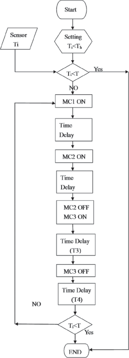
(M2) 激磁，幫浦指示燈 (L3) 亮，高壓幫浦起動，把水加壓送入水管內，以進行噴霧作業。
（四） 經過 (T2) 的延時設定t2後，(T2) 延時b接點打開，使電磁接觸器 (M2)消磁，幫浦指示燈 (L3) 熄滅，(T2)延時a接點閉合，(T3) 定時器開始通電計時，此時 (T3) 瞬時a接點閉合，使電磁接觸器 (M3) 激磁，風扇運轉，風扇指示燈 (L4) 亮，將溫室內部濕熱空氣排至外界。
（五） 經過 (T3) 的延時設定時間t 3 後， (T3) 延時b接點打開，使 (M3) 消磁，風扇指示燈 (L4) 熄滅，(T3) 延時a接點閉合，繼電器 (R2) 激磁，其a接點閉合，使定時器 (T4) 開始通電計時。
（六） 經過 (T4) 的延時設定時間t 4 後， (T4) 延時b接點開啟，(M1) 消磁，電磁閥指示燈 (L2) 熄滅，此控制電路處於待機狀態。此時感測器量測的溫度若高於控制器設定溫度，則會重覆步驟二～六；反之，若溫度低於設定值時，就會停止作業，而等待下一次高溫發生時才會啟動此
噴霧降溫系統運轉。 圖5.28 定時器控制的噴霧降溫系統控制策略流程圖。 (參考吳與周，2000整理重繪)
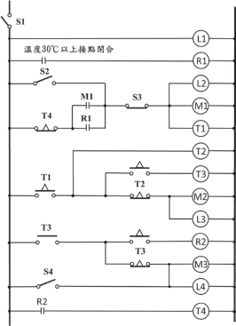
圖5.29 定時器控制的噴霧降溫系統邏輯電路。
(參考吳與周，2000整理重繪)
三、應用PLC於半開放式棚架溫室的環境控制 (吳等人，2011) 針對既有的半開放式棚架溫室環控設
備，例如：高壓噴頭、內循環風扇、保溫
塑膠布與遮光網，以條件序控法為基礎，發展成以PLC為主的控制組合，不同設備的控制策略茲說明如下：
（一） 定時段噴霧降溫 (管理策略一與二)
控制流程如圖5.30所示，在設定時段
T24範圍內，若室內溫度超過Th時，啟動高壓幫浦噴霧t1分鐘後，等待t2分鐘後，啟動風扇通風；t3分鐘。等待t4分鐘，才確認設施內溫度是否下降，若室內溫度低於Th或相對濕度已達飽和，停止噴霧作業。若溫度仍高於Th且相對濕度未達飽和則會重覆此作業。在噴霧作業進行過程中，若溫度已低於Th，但相對濕度未達飽和設定，並不會立即中斷，需待作業完成一循環才會停止。在T24設定時間範圍外，即使溫度超過Th也不會動作，但溫度控制器仍會顯示室內溫度。t1、t2、t3、t4之設定時間，可由使用者設定。

可執行多次循環作業， 不限循環次
數，當按一下啟動開關 (噴霧手自動切換按鈕) 後，會一直循環，若要停止，則必須再按一下啟動開關。
（二） 溫室塑膠布保溫
控制流程如圖5 . 31 示， 若溫度超過
Tl且持續1min以上，會進行塑膠布動作 (uncover)，當完成拉布動作後，會等待t5分鐘，再進行溫度量測。若此時溫度低於Tl且持續1min，則會將塑膠布放下 (cover)，當完成放下動作後，會等待t5分鐘，才進行溫度量測。在動作循環進行中，若溫度已高或低於Tl時，並不會立即中斷，需完成一動作循環才停止。
當切換開關切換至手動後，按下按鈕
即可執行拉或放下塑膠布的動作。
自動部分
如圖5.32所示，在T24設定時段內，若太陽照度超過下限Ll，也就是由低日射變成常日射且持續1min，外遮光網會進行閉合動作 (cover)，當閉合完成後會等待t6分鐘，才進行日射量感測。若此時日射量高於上限
Lh，即由常日射變成高日射且持續 1min，此時內遮光網會進行閉合動作，當閉合完成後會再等待t6分鐘，才進行日射量感測。若日射量已低於上限Lh 時，即由高日射變成常日射且持續1min，此時內遮光網會進行開啟動作 (uncover)，當開啟動作完成後，會等待t6分鐘，才進行日射量感測。若日射量又低於下限Ll 時，則停止此作業。即由常日射變成低日射時且持續1mm時，外遮光網會進行開啟動作，當開啟動作完成後，會等待t6分鐘，才進行日射量感測。在遮光網閉合與開啟作業進行中，若日射量已低於設定值，並不會立即中斷，需待完成一循環才會停止。在設定時間範圍外，若日射量超過設定值，系統亦不會動作，但控制器仍會顯示目前的日射量。
手動部分
當遮光手、自動切換開關切換至手動後，按下按鈕即可執行內或外遮光網閉合與開啟的動作。
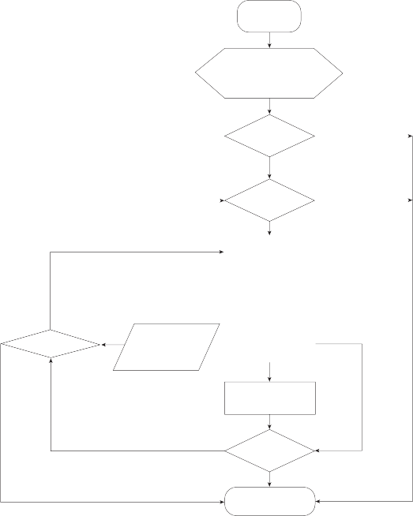
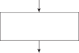
Start
Setting Time T24 (8:00~17:00)
T (30
h
℃)
時間內
Yes
No
Seneor
T (
i
室溫
No
)
Ti>Th
Yes
Yes
RHi<RHh
Sensor
相對溼度)
RH (
i
室內
T1<Th
End
t� 啟(�-動��風m扇in)
Time Delay
t� (�-��min)
Time Delay
t� (�-��min)
t� 噴(�-霧��降m溫in)
No
圖5.30 定時段噴霧降溫控制流程圖。 (參考吳等人，2011整理重繪)
圖5.32 定時段遮光控制流程圖。 (參考吳等人，2011整理重繪)

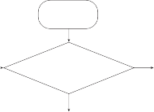
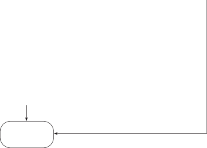
Start
Ti>T1 (20℃)
No
持續1min
Yes
End
Time Delay t� (�-��min)
拉塑膠布 (Uncover)
放下塑膠布 (Cover)

Sensor
T (
i 室溫)
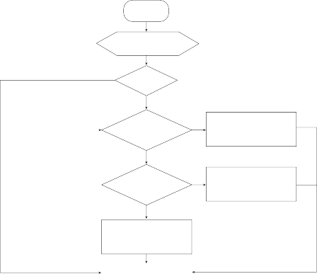
Start
Setting Time T24 (8:00~17:00)
No
時間內
Yes
Sensor
Yes
L (
1
室內)
持續1min
No
l1<Li<Lh
持續1min
No
Li>Lh
Yes
內外網網開閉啟合(U(Cnocvoevre)r)
外內網閉合 (CCover)
常 日 射
高 日 射
內網開啟 (Uncover)
外網開低啟日(U照ncover)
End
Time Delay t� (�-��min)
圖5.31 溫室塑膠布保溫控制流程圖。 (參考吳等人，2011整理重繪)
四、模式控制
溫室內環境控制依據干擾、控制程序、環控設備間必然性關係的開迴路控制，亦可稱為模式控制。模式是將現實狀態簡化描述，控制程序的所有干擾，其相互間關係均規範於模式內。故發生干擾時，控制器能即時正確地預測環境因子的變化，在執行相關演算後，立刻決策維持環境因子於適當狀態的控制動作。依考量的對象不同可分為物理模式與生理模式。
（一） 物理模式 (physical model)
物理模式著眼於溫室內環境受外界的
影響，在物理模式中，控制器計算溫室內外熱交換、CO2濃度、水蒸氣量。例如圖 5.33「CO2」的控制程序，溫室內CO2濃度受到風速及換氣窗開度的干擾，控制器可精確的預測CO2損失量，預先施用CO2，以維持濃度的穩定。
（二） 生理模式 (physiological model)
生理模式的著眼點為植物。植物的生理作用會影響週遭環境因子，重要的影響有：蒸散作用釋出的水蒸氣影響濕度及溫度、光合作用吸收CO2與呼吸作用釋出CO2影響CO2的濃度。對於「CO2濃度」控制程
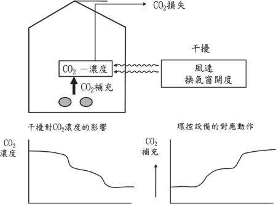
圖5.33 物理模式的示意圖。 (參考Kamp et al., 1996整理重繪)
圖5.34 植物生理與物理模式。 (參考Kamp et al., 1996整理重繪)

序，植物為其干擾。植物對於CO2的吸收量，於充足的光照下增加，不充足的光照下減少。因此透過光強度的量測，代入光合作用模式，可計算出植物對CO2濃度的影響，控制器預先補充相對應的CO2量。植物所引起的CO2濃度變化，也可與物理模式結合。整合成如圖5.34所示的物理與生理整合模式。
生理模式因需考量許多因素、架構複雜，故非常難以建立。以CO2吸收為例，就必須考慮作物大小、作物種類與作物健康狀況等因素。就作物大小而言，較大的作物CO2吸收量多，系統在作物生長過程
中必須頻繁感測與紀錄歷程資料，以正確計算CO2吸收量；就作物種類而言，CO2吸收量因作物種類的單位葉面積而不同，故不同的種類就會有不同的模式參數；就作物健康狀況而言，葉面25％以上有害蟲分泌物 (honeydew) 覆蓋時，會造成CO2吸收量減少，故需時時監測作物的健康狀態，以調整模式參數。
作物生產的基本概念為植物利用光進行糖的生成 (光合成)。現況中，栽培者必須依經驗自行設定最適生長條件，將植物生長過程中所需溫度、RH及CO2輸入控制系統中，未來若能建立複雜的模式可因外
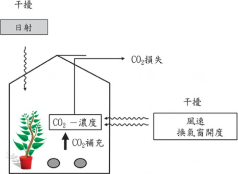
界、市場需求、植物生理而運算出相關之設定值，栽培者將不再須自行設定溫度、RH及CO2等值，可將控制發揮到最大的效益。
五、複合因子的環境控制
複合環境因子代表整合多個環境因子而得出的新參數，而此參數可更貼切描述某個現象，以4-1節中植物蒸散作用的說明可知，氣孔內與大氣的蒸氣壓差可作為代表蒸散作用的參數，但因為極難找到具代表性的葉溫，故可以大氣飽和水蒸汽濃度差 (kg/kgDA) (簡稱飽差) 來代替，張 (2018) 曾以樹梅派作為控制器建置一套藉由溫度、相對濕度與飽差來作為控制
因子的環境控制系統，整體架構如圖5.35所示，使用者可透過人機介面改變控制參數，並依據需求進行高壓噴霧、室內循環風扇、捲揚式天窗控制策略的變更及選擇，各系統控制策略及其餘功能如下所述。
（一） 高壓噴霧系統控制
高壓噴霧系統由風扇加上噴霧組成，其中噴霧主要是利用時間延遲控制其啟閉而形成間歇噴霧，例如：噴霧作業時間設定為1分鐘、噴霧間歇時間設定為30秒，當環境條件達到設定值後即執行噴霧1分鐘，間歇30秒，待執行完該次動作後，再依據環境條件因子量測值，決定是否繼續動
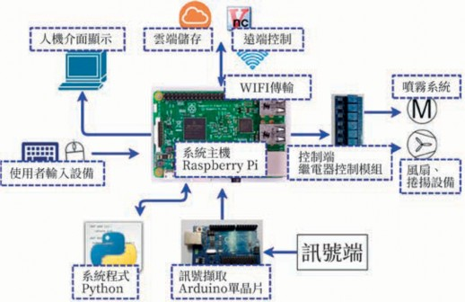
圖5.35 系統整體架構。 (參考 張，2018整理重繪)

作；該模式的缺點為噴霧開啟與間歇時間皆為定值，需依環境現況與經驗進行手動變更。若間歇時間設為0秒，則形成連續噴霧，環境條件達到目標值才停止噴霧。系統控制模式如下述：
利用溫濕度感測資料計算飽差，以不
感帶進行噴霧控制。當飽差高於啟動設定值時，啟動噴霧控制系統；飽差低於關閉值時，關閉噴霧控制系統。此模式為最主要的控制模式，於交互控制中具有最高優先權。
依據感測到的溫度資料，以不感帶進
行噴霧控制。當溫度高於啟動設定值時，啟動噴霧系統；溫度低於關閉設定值時，關閉噴霧系統。此模式為次要控制模式，於交互控制中為第二優先。
依據感測到的濕度資料，以不感帶進
行噴霧控制。當濕度低於啟動設定值時，啟動噴霧系統；濕度高於關閉設定值時，關閉噴霧系統。此模式於交互控制中為第三優先的控制模式。
交互控制模式為上述三個控制模式，
飽差控制、溫度控制、濕度控制模式搭配組合的控制模式，例如同時開啟飽差控制
的啟動條件及溫度控制模式的關閉條件，當飽差值高於6時啟動噴霧系統，溫度小於30℃時關閉噴霧系統。若是三個控制模式同時搭配，則其優先順序為飽差控制優先，溫度控制次之，濕度控制最後。
（二） 室內循環風扇系統
噴霧系統啟動時， 風扇系統會搭配噴霧模式作動；噴霧系統尚未啟動時，風扇為獨立控制，其中風扇的控制模式又分為間歇作動與持續作動兩種。間歇作動係以時間延遲搭配風扇系統控制其啟閉的模式，例如風扇作動時間設定啟動1分鐘、風扇間歇時間設定為關閉30秒，當控制模式條件達到後就會執行風扇運轉1分鐘，間歇 30秒的動作，待執行完上述動作再一次判斷環境因子是否達到控制模式的條件，以決定是否停止動作。持續作動是環境因子達到控制條件後，啟動風扇持續運轉至關閉條件達到，例如風扇啟動條件為飽差低於2，關閉條件為飽差大於等於3，則當飽差值高於2時風扇就會啟動運轉，待飽差值大於等於3時停止風扇運轉。此系統的控制模式與高壓噴霧系統類似，依據飽差、溫度、濕度或交互因子，以設定不感帶的方式控制，在交互控制中仍是以飽差最為優先，溫度次之，濕度為最後。
（三） 捲揚式天窗控制系統
良好通風對溫室來說相當重要，而捲揚式天窗為提升設施通風量的設備之一，其控制策略有：1. 日出時開啟天窗，2. 日落時關閉天窗，3. 陰天時關閉天窗。其中以陰天時關閉天窗為最優先。
（四） 額外功能
此系統除了基本控制策略外，依照環境變化、使用者經驗與需求可自行設定額外功能如下所述：
任何自動化設備為避免故障或誤動作
的產生，必會設置手動模式及自動模式，於手動模式中僅剩紀錄資料與手動控制設備的功能有效外，其餘皆無效。
使用者可自行設定噴霧與風扇控制
策略的運行時間，若是在設定時間之外，系統皆不執行控制策略。除了額外功能，如：飽差過低、日出日落控制等功能不受系統時間控制。
系統可將歷史資料圖表化，並依照使
用者需求，更改資料紀錄頻率。
噴霧前風扇運轉、日落前／日出後風
扇運轉、飽差過低時風扇運轉，其中噴霧前風扇運轉，使用者可依照使用者需求設定是否運轉及提前運轉的時間長度。日落前／日出後風扇運轉、飽差過低時風扇運轉模式是不受系統時間控制，條件達到即會讓循環風扇運轉。
（五） 優先權設定
由於各控制流程會有相互抵觸之狀況，故需設定優先順序為額外功能＞飽差控制、溫度控制＞濕度控制。